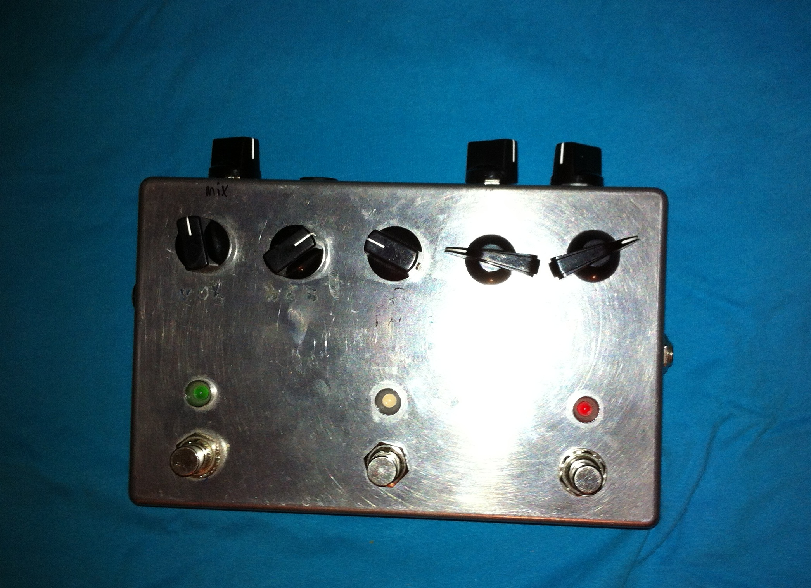
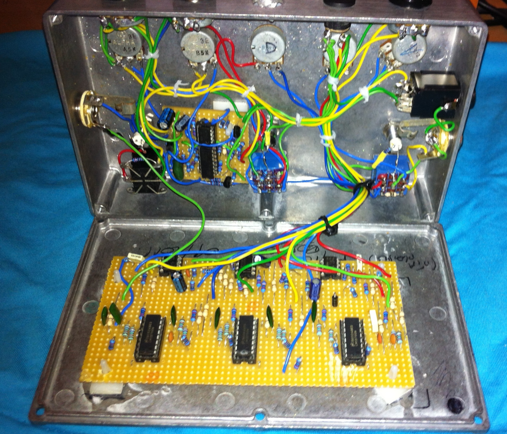

MOTHERPHASER


The motherphaser was built few years ago. Build around 3 LM13700 OTAs.
The phase circuit has
6 variable all pass filter and 2 fixed all pass filter. This gives a richer sound than the traditional 4 stages
phaser.
Some rarely seen features are present. A "volume" control to let the output signal be a bit more hot (it avoids having
the know volume drop thing), a "sweep" that shift the LFO signal up or down the voltage range. There's also a "leslie cabinet"
switching type of thing, that allow the change of two LFO speed, controlled by a "lag" circuit. The new speed takes a certain
amount of time before reaching the target speed.
To add even more crazyness, a momentary footswitch is here to put the lfo at max and let speed decrease according to the
the lag control.
The resonnance control may lead to unpleasant oscillaton, if the input signal is too strong distortion may apper as well (OTAs).
An ever cool version could be made with the LFO circuitry changed for microcontroller that could give more things to play with.